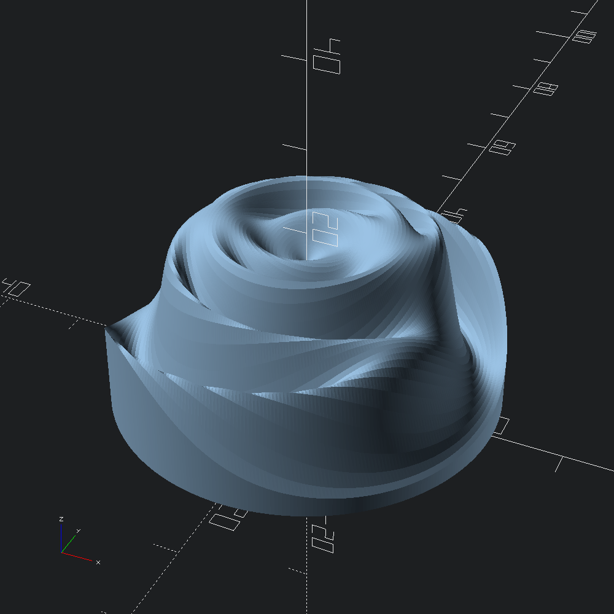

open OCADml
open OSCADmlDefine a function that takes a radius r and angle a, and returns a z coordinate. This rose function is ported from the examples given in the plot function OpenSCAD library.
let rose ~r ~a =
let open Float in
let x =
pow
( (r *. cos a *. cos (r *. 8. *. pi /. 180.))
+. (r *. sin a *. sin (r *. 35. *. pi /. 180.)) )
2.
/. -300.
in
((15. +. (5. *. sin (r *. 10. *. pi /. 180.))) *. exp x) +. 1.Starting from the origin, step outward radially with r_step increments up to a maximal radius of max_r. For each of these radii, rose will be evaluated with angles revolving around the z-axis, evaluating to the height off of the XY plane that that position should be.
let mesh = Mesh.polar_plot ~r_step:0.4 ~max_r:22. roseConvert our mesh into an OpenSCAD polyhedron and output to file.
let () = Scad.to_file "polar_rose.scad" (Scad.of_mesh mesh)